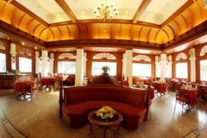
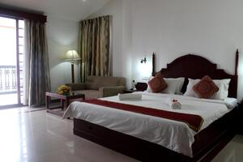
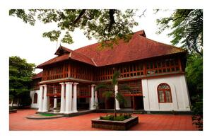

Nestled in the heart of Kerala, Ernakulam emerges as a captivating city, often interchangeably referred to as Kochi, standing tall as the urban pulse of the state. Its very name, drawn from the revered Ernakulathappan temple dedicated to Lord Shiva, translates into the poetic imagery of a 'pond for a long time.' This city, steeped in history and commercial prominence, plays a pivotal role in the tapestry of Kerala's narrative.
The historical fabric of Ernakulam is intricately woven with the cobbled streets and colonial charm of Fort Kochi, a living testament to a bygone era. Landmarks such as the iconic Chinese Fishing Nets, the venerable St. Francis Church, and the vibrant Jew Town echo the footsteps of history, reflecting the city's European influences and creating an enchanting ambiance that transports visitors to another time.
As the sun sets, the enchanting Marine Drive unfolds, a serpentine promenade along the Arabian Sea. Lined with bustling shops and charming cafes, it becomes a canvas where the hues of the evening sky reflect upon the tranquil waters, offering a rhythmic exploration of Kochi's maritime soul. Beyond the urban hustle, the Kodanad Elephant Training Center, nestled on the banks of the Periyar River, invites travelers to witness the majesty of Kerala's gentle giants. Here, amidst lush landscapes, conservation efforts unfold, providing a unique and memorable experience of intimate interactions and elephant rides.
Ernakulam, often hailed as the gateway to Kerala's cultural treasures, promises a journey that transcends time. It is not merely a collection of tourist spots but a seamless fusion of tradition and modernity that defines every corner. This city beckons explorers and culture enthusiasts alike, leaving indelible imprints on the hearts of those who venture into its embrace. With its rich cultural heritage, urban dynamism, and unspoiled natural beauty, Ernakulam stands as a vibrant testament to God's Own Country, inviting all to explore the essence of Kerala in its truest form.
1.Winter in Ernakulam:October marks the commencement of the winter season in Ernakulam, bringing with it pleasant weather, making it the ideal time to explore this vibrant city. The temperatures are mild, ranging from comfortable highs to cool evenings. This season also coincides with various festivals, adding a cultural charm to your visit.
2.Summer in Ernakulam:As summer sets in, Ernakulam experiences a rise in temperatures, with the maximum reaching around 33 degrees Celsius and the minimum hovering around 22.5 degrees Celsius. While the summer months can be hot and humid, it's the perfect time for a more secluded experience, taking advantage of off-season hotel prices. Consider planning indoor activities to beat the heat during your visit.
3.Monsoon in ErnakulamThe monsoon season graces Ernakulam with an average rainfall of about 3000 mm, lasting approximately 124 days. This period is perfect for those interested in Ayurvedic treatments, as the region transforms into a lush green landscape. The soothing rains create a unique charm, offering a different perspective of Ernakulam's beauty. Be sure to carry appropriate rain gear and explore the city's enchanting landscapes during this rejuvenating season.
Fort Kochi, with its cobbled streets and colonial architecture, exudes an old-world charm that transports visitors to a bygone era. The iconic Chinese Fishing Nets, St. Francis Church, and the vibrant Jew Town are must-visit attractions. The fusion of Dutch, Portuguese, and British influences is palpable in the air.
Entry time:6 AM–6 PM and also has free entry.
Embracing the shoreline, Marine Drive is a picturesque promenade offering stunning views of the Arabian Sea. Lined with shops, cafes, and recreational spaces, it's a perfect spot for a leisurely evening stroll or a boat ride, providing a serene escape from the urban hustle.
Entry time: Monday to Sunday - 12:00 am – 11:59
A historical gem, Mattancherry Palace showcases exquisite murals depicting Hindu epics and the royal heritage of Kochi. The Dutch Palace, adorned with architectural elegance, offers a glimpse into the opulent past of the region's rulers.
Entry time: Monday to Sunday-9:45 am – 1:00 pm,2:00 pm – 4:45 pm
Hill Palace is the largest archaeological museum in Kerala in Tripunithura near Cochin. Built in 1865, the Palace complex consists of 49 buildings in the traditional architectural style, spreading across in 54 acres. The complex has an archaeological museum, a heritage museum, a deer park, a pre-historic park and a children's park . The land surrounding the Hill Palace has rare Medicinal Plants.The museum displays 14 categories of exhibits including murals, paintings, sculptures in stone and plaster of paris, manuscripts, inscriptions, carvings etc. The collections displayed in the museum is mainly from the Cochin Royal Family. Some other exhibits are from Travancore Royal House, Paliam Devaswom and from the department of Archaeology. It has a gold crown embedded with precious stones and many valuable coins, ornaments, majestic beds and samples of epigraphy.
Entry time: Monday to Sunday - 9 AM to 12:30 PM,2 PM to 4:30 PM
Escape to the tranquility of Bolgatty Island, home to the Bolgatty Palace and Island Resort. The well-preserved palace, surrounded by landscaped gardens, offers a luxurious retreat. The serene backwaters enhance the overall experience, making it a haven for relaxation.
Entry time: Monday to Sunday - 10:00 am – 6:pm
Kodanad is a very peaceful and pleasant place situated near Perumbavoor on the banks of Periyar River in the Ernakulam district (also Kochi), Kerala. It's one of the famous training centres of Elephants. Located at the distance of 45 km towards the north east of Kochi, it's a place where the newly captured elephants are kept for training. Earlier, elephants were captured in the Malayattoor forests and trained at Kodanad. Though capturing Elephants are banned now and Kodanad has just become the training centre for elephants. There are many walkways beside the river that give pleasant experience to the visitors. There is a small wildlife park at the centre which is a home of deer and other wildlife.
Entry time: Monday to Sunday - 8:00 am – 5:00 pm
As you embark on your journey through the captivating district of Ernakulam, may each moment be a tapestry woven with the threads of rich history, vibrant culture, and the harmonious blend of tradition and modernity. From the historic charm of Fort Kochi to the tranquil shores of Marine Drive and the majestic allure of the Kodanad Elephant Training Center, every corner of Ernakulam promises a unique and enriching experience. Let the city's dynamic spirit and unspoiled natural beauty guide your exploration, leaving indelible imprints on your heart. Enjoy your journey through the gateway to Kerala's cultural treasures, where each step is a dance between the past and the present, and may your time in Ernakulam be nothing short of a magical odyssey.